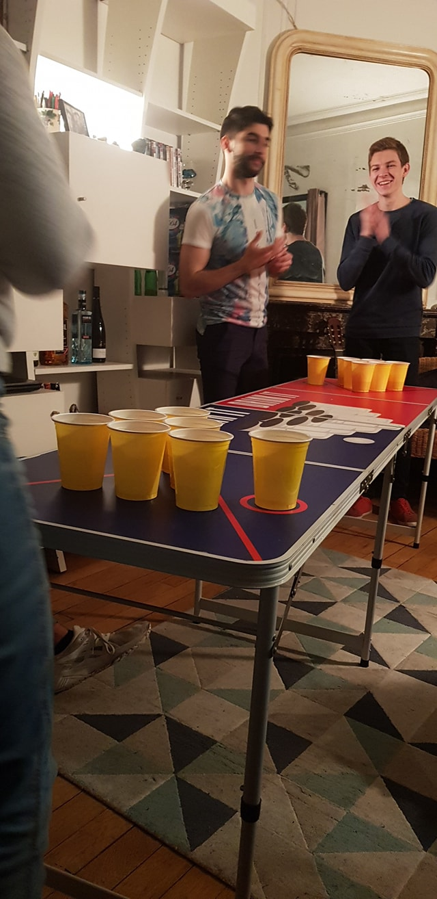

<ion-header [translucent]="true">
  <ion-toolbar>
    <ion-title>
      Home
    </ion-title>
  </ion-toolbar>
</ion-header>

<ion-content [fullscreen]="true">
  <ion-header collapse="condense">
    <ion-toolbar>
      <ion-title size="large">Home</ion-title>
    </ion-toolbar>
  </ion-header>


  <ion-toolbar>
    <ion-segment [(ngModel)]="segmentModel" value="all">
      <ion-segment-button value="all">All</ion-segment-button>
      <ion-segment-button value="favorites">Favorites</ion-segment-button>
    </ion-segment>
  </ion-toolbar>

  <ion-card *ngIf="segmentModel === 'all'">
    <ion-card-header>
      
      <ion-card-subtitle>Clément</ion-card-subtitle>
      <ion-card-title>Beer Pong</ion-card-title>
    </ion-card-header>
  
    <ion-card-content>
      Ce jeu d'adresse des temps romains a réuni tant de joueurs professionnels que d'amis autour d'une même table pour partager un bon moment
    </ion-card-content>
  </ion-card>
  <ion-card *ngIf="segmentModel === 'favorites'" >
    <app-list-item *ngFor="let fav of favs" [img]="fav"></app-list-item>
  </ion-card>
</ion-content>
